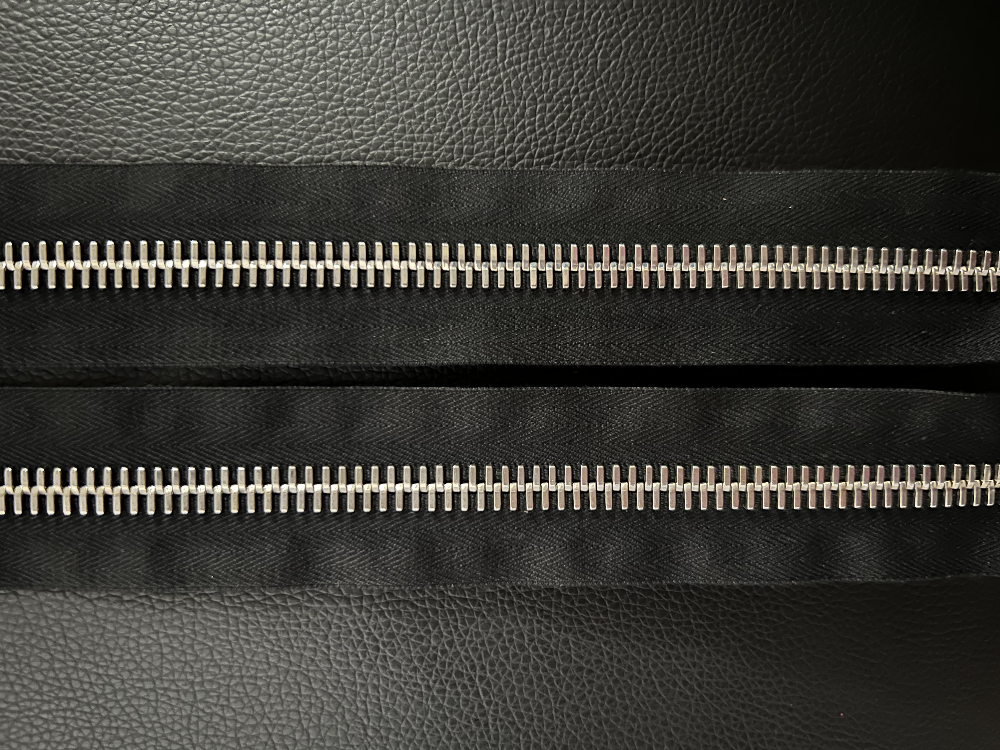

00
The genesis of this personal project, 00, is a showcase of what I have done before and a preview of the future. 00 is a pair of Black Levi's jeans tailored to fit me and embellished with Raccagni zippers. I have had clothing tailored by a professional for years. Over time, I experimented with my tailor to make modifications to clothing that wasn't your typical alterations. 00 is an example of such a project. A blend of American pragmatism and Italian luxury, 00 is my foray into the world of design.